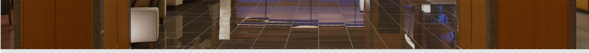

交通方式
通过乘电车
京都方向
有马温泉-在有马口站换乘神户电铁线-在谷上站换乘神户电铁线-在神户站换乘JR线(新干线）-京都
大阪方向
有马温泉-在有马口站换乘神户电铁线-在谷上站换乘神户电铁线-在三宫站换乘地铁线-JR线大阪方向
神户/三宫方向
有马温泉-在有马口换乘神户电铁线-在谷上站换乘神户电铁线-在三宫站换乘JR神户线-JR神户方向
环球影城方向
有马温泉-在有马口站换乘神户电铁线-在谷上站换乘神户电铁线-在三宫站换乘JR线-在大阪站换乘JR线-在西九条站换乘JR梦之咲线-环球影城方向
通过乘巴士
三宫/站/新神户站
JR线大阪站
JR线京都站
如有预约巴士的需求，本馆可为您代理预约
请咨询前台